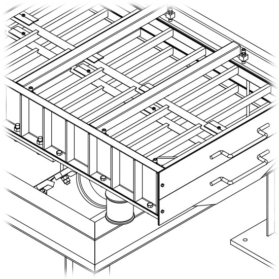

William Koch
Sou tradutor, programador, técnico em EletroMecânica e Gestor de Produção Industrial, bateirista e mexatrônico.
Publico ideias e artigos no meu blog.
Mantenho meus códigos no GitLab e GitHub
Projetos
Haiku
Haiku é um gerador de blog em html estático, simples e minimalista, possui uma única funcionalidade, converter posts e páginas escritas em markdown para arquivos html estático usando um tema padrão.
Haiku é perfeito para quem quer um blog mas detesta perder tempo instalando, configurando, fazendo backups e atualizando o software do blog, o foco do haiku não está em reunir todo tipo de funções ou facilitar a personalização com temas, mas sim no conteúdo.
Estou reescrevendo esse projeto originalmente escrito em Ruby, em uma linguagem que gere binários nativos, fiz alguns testes usando C# e .Net Core, porém ainda não me decidi sobre a linguagem, talvez use Haskell. Novidades em breve.
Tradução
FluxBB Brasil
Fui o tradutor oficial do idioma Português Brasileiro do fórum FluxBB e mantenedor do site do projeto (Offline).
O desenvolvedor do FluxBB seguiu para um novo projeto chamado Flarum e eu não continuei as traduções por não usar mais o software.
Project Zero 4 Brasil
Participei do projeto de tradução do jogo Project Zero 4 (Site Offline) para o Nintendo Wii, conhecido também como Fatal Frame 4, como tradutor e programador (Ruby e C).
Outros
Já participei na tradução de aplicativos Linux como o XFCE e também em outros sistemas web e até mesmo aplicativos mobile iOS e Android.
Carreira
Formação
Sou formado em áreas relacionadas à Manutenção e Produção Industrial, como Eletricista de Manutenção Industrial, Técnico em Eletromecânica e Gestão de Produção Industrial. Tenho anos de experiência em desenvolvimento de projetos mecânicos em 3D com CAD.
Programação
Sou programador multiplataforma com conhecimento em várias linguagens, e experiência no desenvolvimento de aplicativos locais para automação de tarefas, no desenvolvimento de sites e um pouco de GUI.
Aprendi a programar com a linguagem Ruby. Uso as linguagens C e C++ para projetos eletrônicos com Arduino, para o qual já desenvolvi algumas bibliotecas [1] [2] [3] [4] [5] e um sistema de automação de uma máquina empacotadeira industrial. Estudei um pouco de C# e agora estou aprendendo Elixir e Haskell.
Gosto tanto de programação e informática em geral que estou trocando de carreira para a área de informática e planejo cursar Engenharia da Computação assim que possível.
Hobbies
Bateirista
Toco uma bateria Roland TD-4K, como hobbie, tenho também um baixo e uma guitarra (Yamaha) que adoro o som, porém não me dediquei o sufieciente para aprender.
Eletrônica e Hacks
Gosto muito de passar algum tempo criando pequenos projetos caseiros com alguns componentes Eletrônicos e um Arduino. Às vezes eu mesmo conserto meus aparelhos quando apresentam defeito, procure mais no meu blog.
Livros
Costumo ler bastante, mais de 20 livros por ano há pelo menos 4 anos. A maioria está registrada no GoodReads.